夕方のリビングだけ、妙に暑くなる家
毎年6月に入ると、お客様から決まって同じご相談が増えはじめます。「夕方になると、リビングだけ妙に暑い」「2階の子ども部屋だけ、エアコンが効かない」。朝夕は涼しくなったはずなのに、西向きの部屋だけは夕方になると蒸し風呂のようになる、というご相談です。
遮光カーテンを足してみても、ブラインドに替えてみても、いまひとつ効果を感じない。電気代の明細を見て、また少しため息が出る。「うちのエアコン、もう寿命かな」と買い替えを検討される方も少なくありません。
しかし、ほとんどの場合、エアコンに罪はありません。原因は、部屋の中ではなく、もう少し外側にあります。順を追って、お話ししていきます。
家に入る熱の約7割は、窓から
意外に思われるかもしれませんが、夏に家の中へ入ってくる熱の多くは、壁や屋根からではありません。日ざしが強い時間帯は、家に入る熱のおよそ7割が窓（開口部）から入ってくるといわれます。これは住宅の断熱性能を扱う一般社団法人 日本建材・住宅設備産業協会など、複数の業界資料でも示されている数値です。
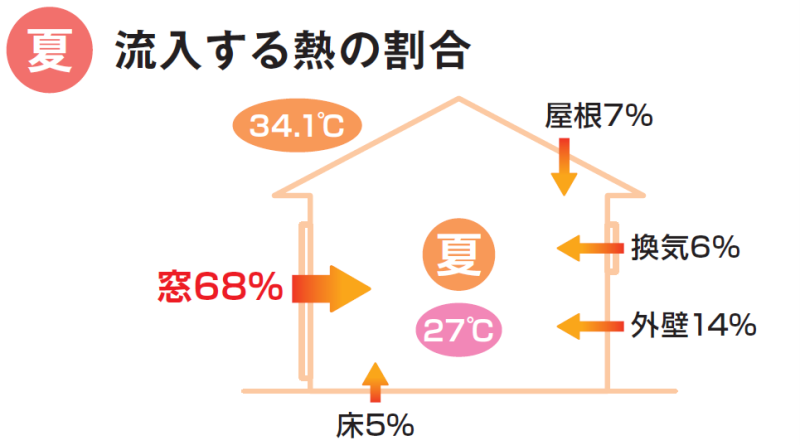
つまり、屋根を断熱しても、壁を厚くしても、夏の暑さ対策としての効果はそこまで大きくありません。同じ手間とお金をかけるなら、窓に手を入れたほうがずっと効きやすい、ということになります。
カーテンで遮るのが、なぜ効きにくいのか
「じゃあ、窓の対策は前からやっているよ」とおっしゃる方は多いです。遮光カーテン、レースのカーテン、内側のブラインド、遮熱フィルム。どれも一定の効果はあります。
ただ、これらにはひとつ共通点があります。すべて、窓ガラスの内側で熱を受け止める対策だ、という点です。
窓ガラスを日差しが通過した時点で、熱はもう部屋の中に入っています。カーテンやブラインドはそのあとの熱を受け止めているだけで、入ってきた熱そのものを減らしているわけではありません。たとえるなら、お湯を浴槽に入れたあとでフタをするようなものです。一度入った熱は、なかなか外へ逃げていきません。
遮熱フィルムは、ガラス自体に貼って日差しの透過を減らす製品なので、カーテンよりは効きます。それでも、窓の手前で完全に止めているわけではないため、強い西日には少し力不足、という現場感覚があります。
窓の外で日差しを止める、という考え方
では、どうするか。答えは単純です。
熱が入ってくる前に、窓の外で日差しを止めてしまえばいい。
窓ガラスにたどり着く前に日差しを遮ってしまえば、そもそも熱が部屋に入ってきません。入ってこない熱は、受け止める必要もありません。エアコンの仕事も、それだけ軽くなります。
言葉にすれば当たり前のことですが、夏の暑さ対策で「窓の外側で止める」という発想は、実はあまり一般的ではありません。多くの方が「内側で何とかしよう」と考えてしまうので、「窓の外」と聞いてピンとくる方は少ないのが現状です。
外付け日よけという選択肢
窓の外で日差しを遮る方法は、いくつかあります。よしずやすだれは昔ながらの工夫ですし、樹木で南側を覆うのも有効です。外付けブラインドといった製品もあります。
その中で、戸建てのお客様にいちばん始めやすくおすすめしているのが、LIXIL の「スタイルシェード」という外付けの日よけです。スクリーン状の生地を窓の外側に下ろして、強い日差しを窓ガラスに届く手前でカットします。大がかりな工事は必要なく、多くは室内から取り付けできて、足場も要りません。
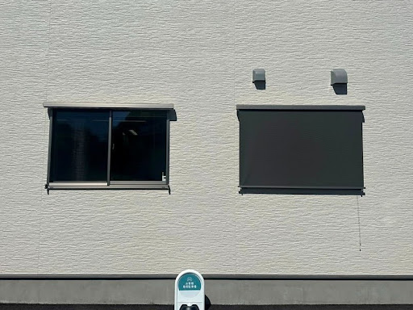
メーカーの公表値では、窓から入る日射熱を最大で約83％カットできるとされています。家に入る熱の7割が窓からだとすると、その窓の熱を8割以上減らせる、という計算になります。エアコンの効きが変わるのを体感しやすいのは、そのためです。

真っ暗にしてしまうのではなく、生地の色を選べばやわらかい明るさが残ります。外からの視線も適度に遮るので、日よけをしながらプライバシーも保てるのは、外付けならではの副産物です。
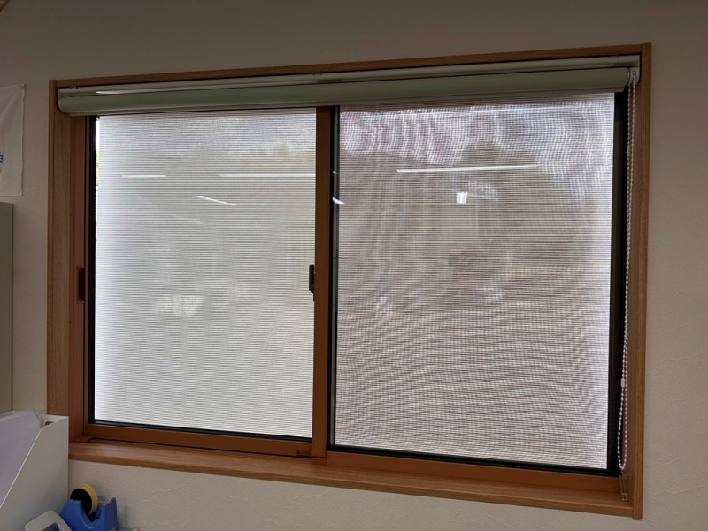
使わない季節は、巻き上げてすっきり収納できます。一年中下ろしっぱなしにする必要はなく、夏のあいだだけ下ろして使う、という運用が自然です。
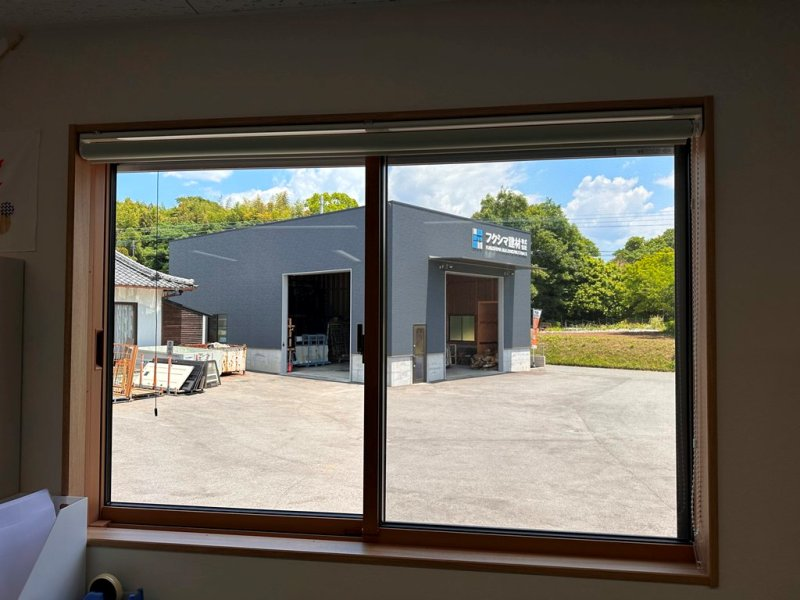
自社の事務所で、実際に測ってみました
「窓の外で止めると効く」「内側で受け止めるだけでは効きにくい」と言葉でお伝えしても、なかなか実感は湧きにくいものです。そこで、私たちの事務所の窓で実際に測ってみました。
事務所には、ほぼ同じ大きさの窓が左右に並んでいます。左の窓は室内側にロールスクリーンを下ろし、右の窓は外側にスタイルシェードを下ろしています。片方は「内側で受け止める」、もう片方は「外側で止める」。同じ部屋で、その差をそのまま比べられる状態です。
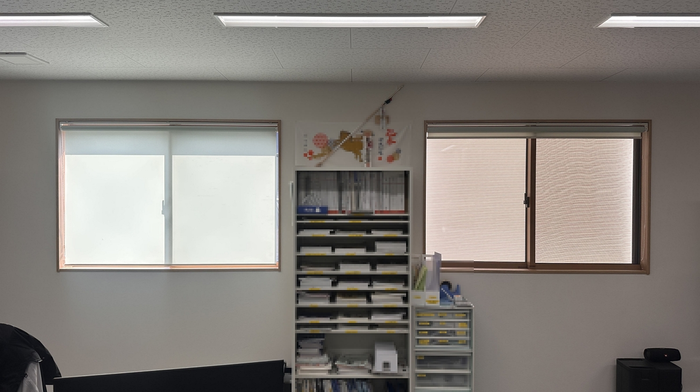
見た目はそれほど変わりません。ところが、この同じ窓をサーモグラフィー（表面温度を色で見える化するカメラ）で撮ると、はっきりと差が出ます。
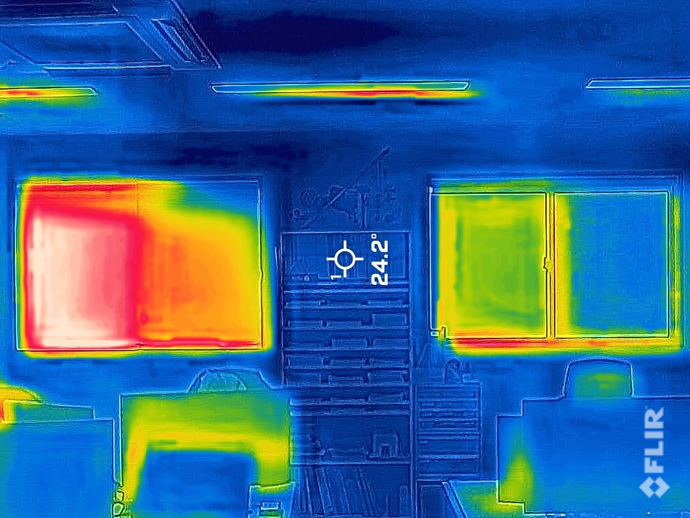
数字にすると、もっとはっきりします。それぞれの窓ガラス面の表面温度を測ったのが、次の2枚です。
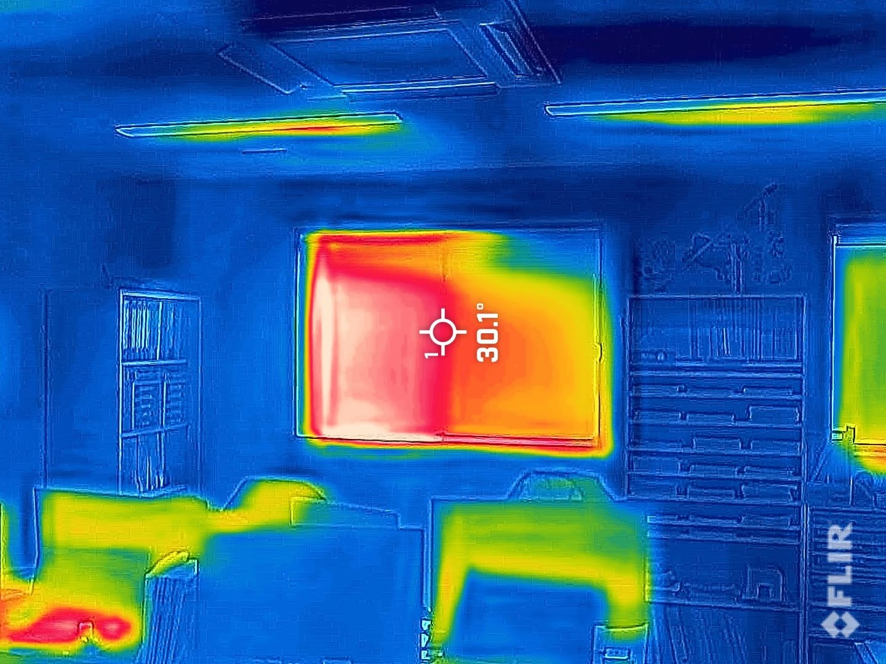
左・室内ロールスクリーン30.1℃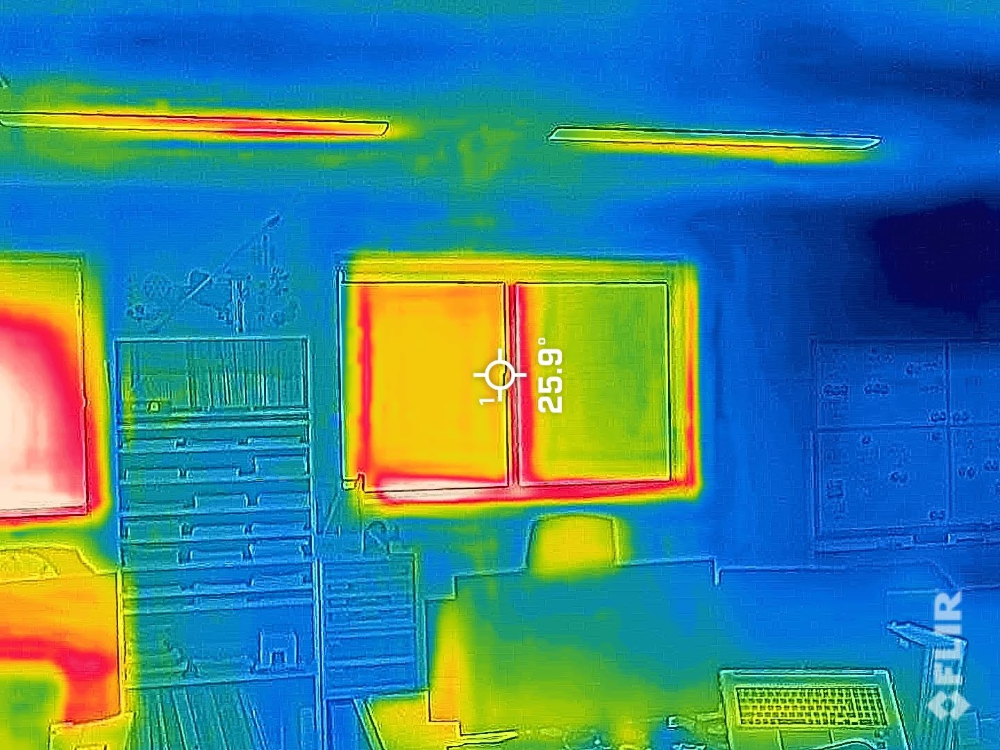
右・外付けスタイルシェード25.9℃※ 弊社事務所にて同条件で実測。数値は窓まわり（ガラス面）の表面温度。気象条件・時間帯によって変わります。
窓まわりの表面温度で、およそ4.2℃の差が出ました。注目していただきたいのは、左の窓には室内側にロールスクリーンを下ろしている、という点です。それでも窓ガラスを通り抜けて入ってきた熱（放射熱）は、内側のスクリーンでは止めきれず、窓そのものが30℃を超えて熱くなっています。お湯を浴槽に入れたあとでフタをしても、お湯がぬるくならないのと同じことです。
一方、外側でさえぎった右の窓は、そもそも窓自体が熱くなっていません。日差しが窓ガラスに届く前に止めているからです。
内側でいくら受け止めても、窓そのものは熱いまま。外で止めると、窓自体が涼しくなる。
夏の夕方、窓のそばに立ったときに感じる、あの「ジリジリ」とした暑さ。あれは、この窓まわりの表面温度の高さからきています。外付けで止めると、その“じりじり”そのものが小さくなる、というわけです。数字や図だけでなく、実際の室内側の温度でこれだけ差が出ることは、私たち自身も毎年あらためて実感しています。
他の暑さ対策と比べて、どこが違うのか
「窓まわりの暑さ対策」と言っても選択肢はいくつもあるので、よく比較する4つの選択肢を表にまとめておきます。あくまで一般的な目安です。お住まいの条件で変わりますので、参考程度にご覧ください。
| 対策 | 遮熱効果 | 費用の目安 （窓1箇所） |
工期 | 窓リノベ 補助金 |
|---|---|---|---|---|
| 遮光カーテン | △ | 1〜3万円 | 即日 | × |
| 遮熱フィルム | △〜○ | 3〜5万円 | 半日 | × |
| 内窓（樹脂サッシ） | ○ | 8〜10万円 | 半日〜1日 | 対象 |
| 外付け日よけ （スタイルシェード） |
◎ | 3〜5万円 | 約1時間 | × |
※ 弊社施工の一般的な目安。窓のサイズや取り付け条件で変わります。補助金については「先進的窓リノベ2026」を想定しています。
表を見ると、夏の暑さに対しては外付け日よけがコストパフォーマンスでいちばん有利であることが分かります。費用は遮熱フィルムと同程度で、効果はそれより上、工事も短時間で済むためです。
一方で、冬の寒さや結露が気になるなら、内窓のほうが向いています。内窓は補助金（先進的窓リノベ2026）の対象なので、実質の負担は表の金額より下がります。「夏も冬も両方なんとかしたい」という方には、外付けシェードと内窓の組み合わせをおすすめすることもあります。
夏の西日が悩みなら、まずは外付け日よけから。冬の寒さや結露もなら、内窓を加える。
これが、ここ数年で私たちがお客様にお伝えしている「窓まわり対策のセオリー」です。
費用と工期の目安
スタイルシェードは、窓リフォームの中では始めやすい価格です。1箇所あたりおよそ3〜5万円。商品と工賃を込みにしての目安です。窓のサイズや取り付け条件で前後しますが、極端に変わることは少ないです。
施工は1箇所およそ1時間で完了します。多くは室内からの取り付けで、足場も要りません。「気になる窓だけ、まず1箇所」というご依頼も多く、そこから様子を見て翌年に追加される方もいらっしゃいます。
ひとつだけ正直にお伝えしておくと、外付けシェード単体は先進的窓リノベ2026などの窓リフォーム補助金の対象ではありません。「補助金を使って、ガッツリ暑さ対策」というご希望なら、内窓との組み合わせのほうが向いています。状況をお伺いして、いちばん合うものをご提案します。
実際の施工事例とお客様の声
サーモグラフィーで窓まわりの温度差はお見せしましたが、実際の住まいでの見た目や仕上がりも気になるところだと思います。私たちが実際に施工した事例を、いくつかご紹介します。
事例 01南向きのリビング・代表 福嶋の自宅

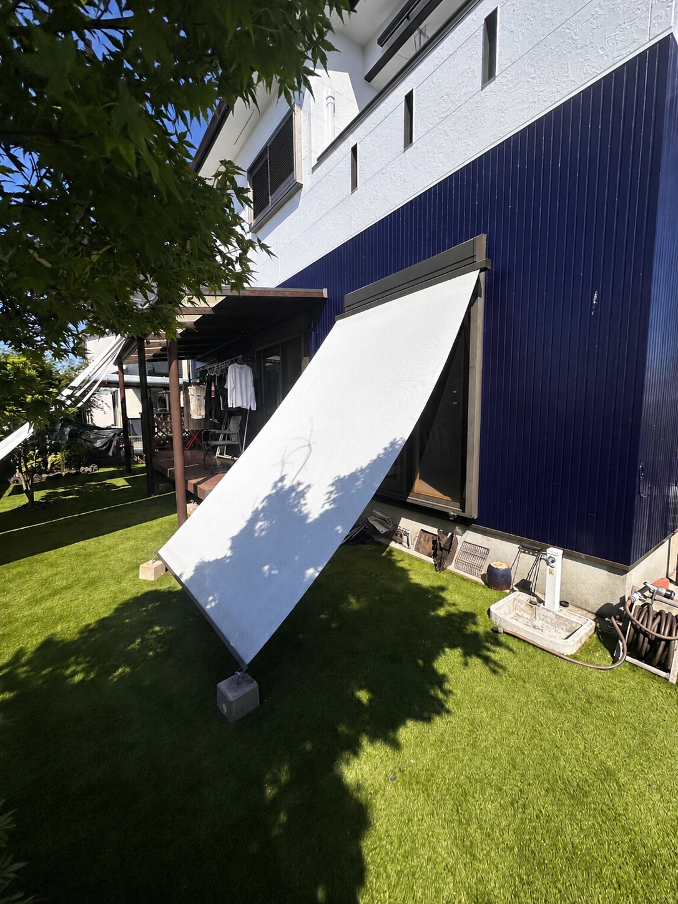
自分が暮らす家で効果を確かめてから、お客様におすすめできるかを判断しています。代表自宅でも実装済みの対策です。
事例 02西向きの出窓・A様邸（熊本市大江）
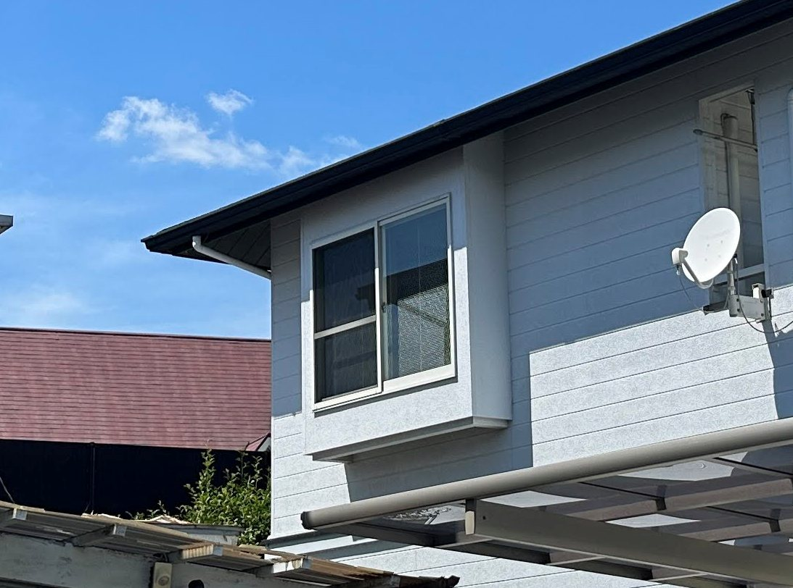
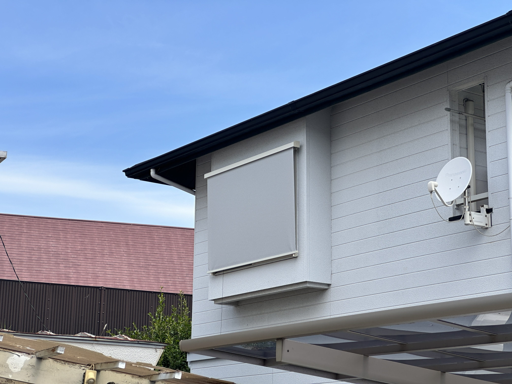
出窓は三方向から日射を受けるため、夏は特に熱がこもりやすい窓です。窓の外で日射を止めると、出窓まわりの熱だまりがやわらぎます。
事例 03シャッター付き西向きの窓・B様邸
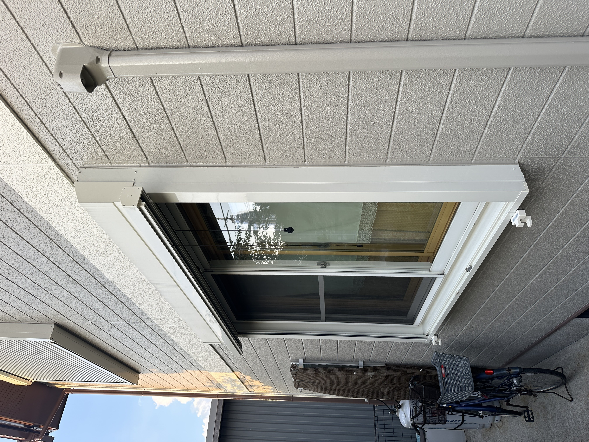
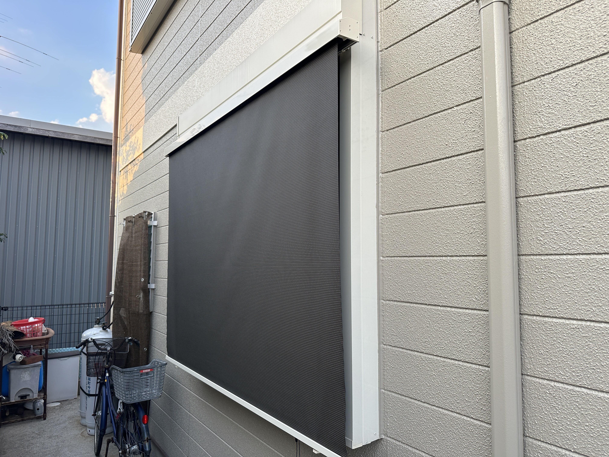
シャッターがあっても、外付けのシェードは取り付けられます。シャッターを閉めずに日射だけをカットできるので、暗くせずに涼しさをつくれます。
お客様からいただいた声
つけてからエアコンの効きが全然違います。夕方の西日が和らいで、部屋にこもる暑さが減りました。
戸建ての西向きリビング
暑くてどうにもならなかった2階が、設置後は室温が下がって過ごしやすくなりました。
2階の暑さ対策
子ども部屋が南西向きで、午後はカーテンを閉めても暑かったのですが、シェードをつけてから日差しがやわらぎ、子どもが昼寝しやすくなりました。
子ども部屋の西日・暑さ対策
（160件以上）
施工を担当
熊本・福岡
窓のプロとして30年、考えていること
フクシマ建材は1996年の創業で、今年で30年になります。私自身も、父の代から続くこの仕事と向き合いながら、窓のリフォームに携わってきました。最初は商品を売る仕事だと思っていましたが、年々「お客様の暮らしの困りごとに向き合う仕事」だと感じるようになりました。
この30年で、ご相談の中身はずいぶん変わりました。以前は「冬の寒さ」「結露」のご相談が中心でしたが、ここ数年は「夏の暑さ」「電気代」のご相談が一気に増えました。気候そのものが変わってきていることを、現場でいちばん肌で感じています。
だから今、私たちが大切にしているのは、商品を売り込むことではなく、お客様の状況を聞いてから「いちばん合うもの」を一緒に選ぶことです。「内窓のほうがいいですよ」「シェードよりこちらが向いていますよ」とお伝えすることもよくあります。今ある窓を全部やりかえるのが正解ではないことも、よくあります。
そうやって一軒ずつ向き合うなかで、おかげさまで多くのお客様にご紹介をいただけるようになりました。地域の方々への感謝を忘れずに、これからも続けていきたいと思っています。
「西日で困っているのですが、どうしたらいいですか」
そのひと言から、ぜひ始めてみてください。
よくあるご質問
遮熱フィルムと外付けシェード、どちらを先にやるべきですか
迷ったらシェードを優先してください。窓の外で日差しを止めるほうが、入ってきた熱を内側で受け止めるより効果を感じやすいためです。状況をふまえてご相談に乗ります。
マンションでも取り付けできますか
正直にお伝えすると、ほとんどのマンションでは難しいのが現実です。外壁への取り付けが管理規約で禁止されているケースが多いためです。戸建ては問題なく取り付けできます。
台風や強風のときはどうなりますか
強い風が来る前には、巻き上げて収納してください。使わない時期はしまっておけるので、生地を長持ちさせることにもつながります。
冬はどうなりますか
スタイルシェードは日差しを遮る日よけで、冬の断熱性能を上げるものではありません。冬の寒さ・結露対策をご希望なら、内窓のほうが向いています。あわせてご提案できます。
工事は何時間かかりますか
1箇所あたりおよそ1時間です。多くは室内からの取り付けで、足場も不要。大がかりな工事にはなりません。
- 関連：公式サイトの施工レポートを読む
- 動画で見たい方は：フクシマ建材 公式YouTubeチャンネル